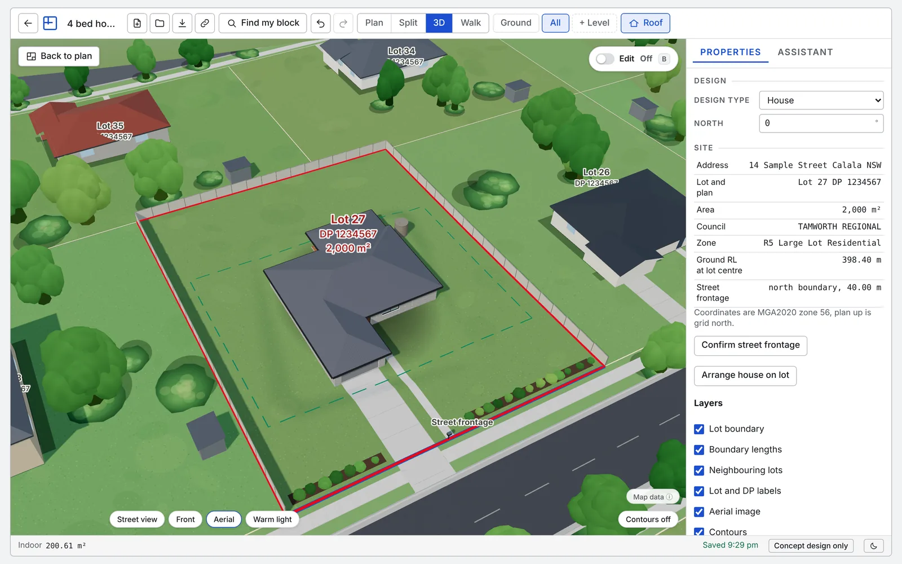

Plan library, shed
Shed house plans: draw the layout and view it in 3D
Use a shed as the shell, draw the rooms you want inside and see how it works.
Concept designs only. Not for construction or council lodgement.

The starting plan
A 9 x 7 m steel shed with two roller doors, a workbench, shelving and room for a car. A larger 15 x 9 m farm machinery shed is also available.
If you already have a design saved in this browser, the tool opens that first. Choose New design and pick the template to start fresh.
About this starting plan
Pocket Architect does not have a ready made shed home layout yet. It does have shed templates you can use as the shell. The garage and workshop shed is a 9 by 7 metre steel shed with two roller doors, a workbench, shelving and room for a car. A larger 15 by 9 metre machinery shed has three roller doors, 4.2 metre walls and a 22,500 litre tank.
Open one, then draw the rooms you want inside, add doors and windows and place furniture. The 3D model builds as you draw, so you can take the roof off, orbit the shed and walk through it. It is a quick way to test a shed house or a shed with living space before you talk to a supplier or your council.
This is a concept design only.
Prefer another starting point? Open the farm machinery shed template.
Common questions
Is there a shed house template?
Not yet. There are two shed templates, a garage and workshop shed and a farm machinery shed. Use either as the shell and draw the rooms you want inside it.
Can I live in a shed?
Whether a shed can be used as a dwelling depends on your council's planning rules and the building code. Pocket Architect does not check this. Ask your council before you plan around it.
Can I plan roller doors and a rainwater tank?
Yes. The farm machinery shed template includes three roller doors and a 22,500 litre tank, and you can add or change doors, windows and tanks.
What do I get for A$30?
A PDF plan set, a DXF for CAD, a 3D model file (GLB and OBJ) and an interactive HTML file that opens offline, for one job, including GST, plus 500 AI assistant credits. You can export again as often as you like for 12 months. Drawing and viewing are free.
Do I need to sign up to try it?
No. You can draw and view in 3D without an account. Your work saves in your browser. If you buy a job, Stripe collects your email at checkout and we use it to restore your purchase.
More starting plans
- Shed with living quarters
- 2 bedroom granny flat plans
- Home extension ideas
- 4 bedroom house plans
- All plans
Pocket Architect produces concept designs only. They are not construction drawings, not development application or complying development documentation, and have not been checked against planning controls, the National Construction Code, BASIX or any standard. Engage a qualified designer, engineer or certifier before building.
Open the plan and make it yours.
Free to draw and view, with no sign-up. A$30 per job (incl. GST) unlocks a PDF plan set, a DXF for CAD, a 3D model file and an interactive HTML file that opens offline.